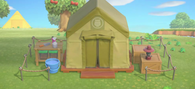

1. 기본 소개
위 사진은 단계별 박물관의 여러가지 사진이다. 부엉이 운영하고 있는 시설로 생물이나 화석, 미술품을 전시하는 공간이다. 전시품은 해당 플레이어의 기증 을 통해 운영된다. 기증한 물품은 언제든지 전시실에서 구경할 수 있다. (동물의 숲 시즌에 따라 다르지만) 처음에는 부엉이 섬의 생태 조사 목적으로 왔다는 설정으로, 자그마한 텐트로 시작한다. 그러나 부엉에게 총 15종의 생물이나 화석을 기증하면 공사를 통해 이틀 뒤 텐트 자리에 정식으로 박물관을 개장하고, 부엉의 대사를 보면 과거와 달리 심사가 까다로워져서 이렇게 해야만 한다고 전한다.2. 곤충 채집
위 낚시보다는 비주류지만 많은 곤충들이 돈을 많이 주고 그림자로 비치는 물고기에 비하면 눈으로 직접 보이기 때문에 비싼 곤충이 보이면 잠자리채를 들게 되고, 무엇보다 도감이 있으므로 도감을 채우기 위해 간간이 하게 될 활동 중 하나이다. 하지만 낚시보다 어려운데, 나비류 같이 필드를 나는 곤충은 적어도 놓쳐도 도망가지는 않지만 강을 건너게 되면 그때부터 난감해지고, 매미류나 풍뎅이류 같이 나무에 달라붙는 곤충은 각도를 잘 계산해서 슬금슬금 다가가 한번에 확 잡아야 하는데, 이때 잡는 데 실패하면 곤충이 놀라서 도망간다. 특히 야자나무에 붙는 비싼 곤충들은 움직임에 매우 민감해서 어지간히 천천히 걷지 않는 한 쉽게 날아간다. 특히 삽으로 바위를 치고 잠자리채를 곧바로 들어야 하는 쥐며느리나, 소리를 듣고 예측해서 찾는 땅강아지나, 나무를 신나게 흔들고 다니다가 벌집이 나오면 도망가다 어느정도 거리를 벌린 뒤 잠자리채를 꺼내고 잡지 않으면 얼굴이 망가지는 벌이나, 잡지 못하면 그대로 집으로 강제 송환시키는 타란튤라나 전갈[14]은 잡기가 매우 힘들다. 그렇지만 남쪽 섬에서는 나무에 자주 달리는 사슴벌레, 톱사슴벌레, 장수풍뎅이만 각각 1000벨, 2000벨, 1350벨이고, 오후 7시부터 흔히 날아다니는 모르포나비(2500벨), 오후 6시부터 땅에서 많이 보이는 길앞잡이(1500벨), 오후 5시 이후부터 나오는 야자나무에 나오는 골리앗꽃무지(6000벨), 코카서스장수풍뎅이, 엘라푸스가위사슴벌레, 코끼리장수풍뎅이(이상 8000벨), 헤라클레스장수풍뎅이, 황금사슴벌레(이상12000벨)는 꽤 자주 나오면서도 돈을 꽤 많이 주며, 오후 11시 이후부터는 왕사슴벌레(10000벨)도 일반 나무에 나오기에 곤충 채집의 메리트가 상당히 크다. 낚시의 경우 거대한 물고기[15] 상어류를 제외하면 어떤 크기의 물고기든 1000벨을 넘기지 않는 종류가 섞여있기에 도박성이 크다. 고로 남쪽 섬에서는 오후 5시 이후라면 곤충 채집을 주류로 하고, 낚시는 거대한 물고기나 상어만 보이는 족족 낚는 서브로 할 것을추천한다.3. 화석 발굴
매일 땅 위에 4~5(운 좋으면 6개)개씩 생성되는 별 모양을 삽으로 파면 화석을 캐낼 수 있는데, 박물관의 부엉에게 감정을 할 수 있다. 보통 여러 개의 파츠로 나누어져 있으며, 파츠 수가 가장 많은 화석은 디플로도쿠스다. 화석으로 나오는 생물의 종류는 다음과 같다. 디플로도쿠스와 메가케롭스처럼 학명의 변화까지 반영하는 등 은근 고증이 뛰어난 편이다. ☆은 모여봐요 동물의 숲 기준 신규 추가 화석이다. 화석에 대해 더 궁금하다면 여길 클릭해 주세요.